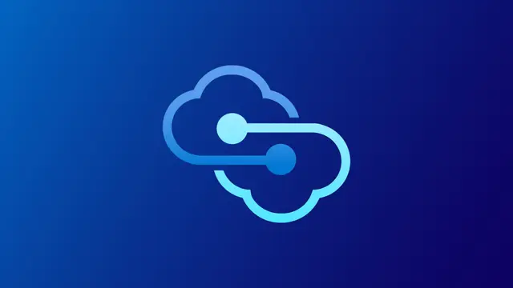

Microsoft / その他
MicrosoftとAWS、クラウド間接続を刷新「Azure Multicloud Interconnect」を発表

Microsoftは、AzureとAmazon Web Services（AWS）を専用のプライベートネットワークで接続する「Azure Multicloud Interconnect for AWS」を発表しました。両社が共通のOpen API仕様を用いて連携し、従来は複数サービスの組み合わせや個別調整が必要だったマルチクラウド接続を、よりクラウドネイティブな形で簡素化します。
QUICK READ
この記事の要点
AzureとAWSを専用回線レベルで直結
Azure Multicloud Interconnectは、AWS側の「AWS Interconnect – multicloud」と連携し、AzureとAWSの間に高性能なプライベート接続を構築する仕組みです。 これまで両クラウドを接続する場合、物理接続、ルーティング設定、各サービスのプロビジョニング、監視、ライフサイクル管理などを個別に調整する必要があり、導入に数週間から数カ月を要するケースもありました。 新方式では、両社が標準化されたOpen API仕様を利用して相互運用することで、こうした基盤部分の複雑性を抽象化します。企業はネットワークそのものの構築より、アプリケーションやデータ基盤の設計に集中しやすくなります。
最大100Gbps、AIワークロードも想定
一般提供開始時点から最大100Gbpsの接続を展開でき、需要の増加に応じて容量を拡張できる設計です。 さらにAzure Private Linkと組み合わせることで、クラウド間を含めたエンドツーエンドのプライベート経路を構築できます。AWS側はMACsecによるリンクレイヤー暗号化や99.99％の可用性も特徴として挙げています。 特に重要なのがAI用途です。学習や推論では、大量のデータと計算資源が異なるクラウドに分散するケースがあります。高帯域かつ予測しやすいクラウド間ネットワークが整備されれば、データ配置や計算基盤を単一クラウドへ無理に統合せず、用途に応じて使い分ける構成を取りやすくなります。
「マルチクラウド」の運用モデルそのものを変える可能性
今回の発表で注目すべきなのは、単なる高速回線ではなく、クラウド事業者同士が共通APIで接続のプロビジョニングや運用を自動化しようとしている点です。 Microsoftは、この仕組みを将来的に他のハイパースケーラーやネットワーク事業者、通信キャリアへ拡張する構想も示しています。実現すれば、クラウド間接続を個別設計する現在のモデルから、APIを通じて必要な帯域や接続先を動的に確保するモデルへ移行する可能性があります。 一方、実際の導入では通信料金、対応リージョン、経路設計、障害時の責任分界、クラウド間データ転送コストなども評価する必要があります。接続が簡単になっても、アプリケーション全体のマルチクラウド化が自動的に簡単になるわけではありません。
Discord掲載記事からの抜粋です。詳細・文脈は全文と出典をご確認ください。
出典・参考リンク
日付はAFNJPへの掲載日です。発表元の公開日とは異なる場合があります。